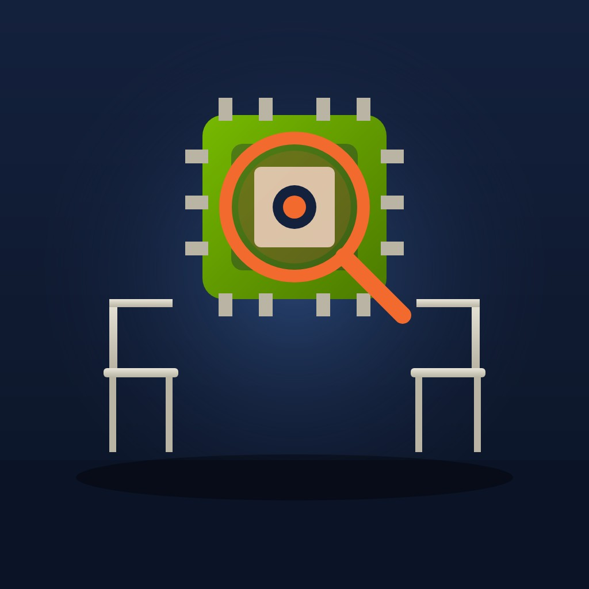

Business

Nvidia board investigates Jensen Huang over alleged Chinese intelligence approach
Nvidia's board has opened an independent investigation after reports that US intelligence identified a Chinese businesswoman close to chief executive Jensen Huang as a state security asset, and Huang admitted an affair.
Abstract
Nvidia's board announced on 8 November 2026 an independent investigation in light of reporting that chief executive Jensen Huang has been the target of a foreign intelligence effort[1]. On the same day Huang told staff that he had been unfaithful to his wife[2,3]. Reporting based on US intelligence assessments says that China's Ministry of State Security recruited Alice Huang, a former executive of the Singapore-based chip buyer Megaspeed, to gather information on him[4,5]. Megaspeed bought more than $4.8 billion of Nvidia chips over two years[3,6], and was reported in October 2025 to be under investigation for allegedly circumventing export rules[7]. The board said it had no reason to believe that national security or Nvidia secrets were compromised[1]. China's foreign ministry called the reporting unsubstantiated[8], and Singapore's Ministry of Home Affairs said there were no such investigations in respect of Alice Huang[9]. The case matters because Nvidia was worth nearly $4.5 trillion[2], and Huang is one of the initial members of the President's Council of Advisors on Science and Technology[10]. Three Republican House chairmen have asked him to attend a closed-door briefing on 18 November[11,12]. The central claims rest on intelligence that has not been released and are known only through news reports[13]. It is not known what, if anything, Huang disclosed, and the board's inquiry has just begun[1].
Key points
- Nvidia's board opened an independent investigation on 8 November 2026, overseen by independent directors assisted by outside independent counsel[1].
- Megaspeed bought more than $4.8 billion of Nvidia chips over two years[3,6].
- Nvidia reported revenue of $96.2 billion for the quarter to 26 July 2026, up 106%, and its forecast assumed no China data-centre compute revenue[14].
- Three Republican chairmen asked Huang to attend a closed-door briefing on 18 November, the day after Nvidia's third-quarter results on 17 November[11,15].
- Jeffrey Sonnenfeld put Huang's chances of keeping his job at about 50-50, while Polymarket put resignation or removal by 31 December 2026 at 16%[16,17].
- Singapore's Ministry of Home Affairs denied that any investigation of Alice Huang took place, and China's foreign ministry called the reporting unsubstantiated[8,9].
References
- Statement from NVIDIA Board of Directors. NVIDIA; 8 Nov 2026. Official statementSite blocks checksArchived copySupports the wording of the board's investigation announcement, the independent committee and outside counsel, the 'no reason to believe' statement, Huang's co-operation and the board's confidence and promise of updates. ↩
- Nvidia opens investigation after CEO Jensen Huang's affair with alleged Chinese spy. NBC News; 8 Nov 2026. News report✓ Link checkedSupports Huang's memo text, the identification of Alice Huang and Megaspeed, the nearly $4.5 trillion valuation, the restrictions on sales to China, Rubio's quote, the chairmen's quote and Huang's net worth. ↩
- Nvidia to probe reports that Chinese intelligence targeted CEO Jensen Huang. France 24; 9 Nov 2026. News reportSite blocks checksArchived copySupports Huang's age, the memo quote, the fact that the two Huangs are unrelated, Alice Huang's past as a television reporter and Megaspeed's purchases of more than $4.8 billion over two years. ↩
- Nvidia will investigate CEO Jensen Huang's relationship with possible Chinese spy. TechCrunch; 8 Nov 2026. News report✓ Link checkedArchived copySupports the allegation that Alice Huang was recruited by China's Ministry of State Security to spy on Nvidia's chief executive. ↩
- Nvidia CEO Jensen Huang faces bipartisan congressional scrutiny over reported China spy link. CNBC; 8 Nov 2026. News report✓ Link checkedArchived copySupports the US intelligence assessment of MSS recruitment, Rubio's oversight of the memo, Coons's description of the administration as corrupt and Magaziner's call for testimony. ↩
- Nvidia investigates CEO Jensen Huang amid allegations he was target of Chinese intelligence effort. CBS News; 8 Nov 2026. News report✓ Link checkedArchived copySupports the fact that Huang's memo did not name the woman, Alice Huang's former role at Megaspeed, the $4.8 billion purchase figure and China's 'groundless speculation' response. ↩
- Reports that CEO Jen-Hsun Huang has close ties with executives of a company that is illegally selling NVIDIA AI chips to China. GIGAZINE; 12 Oct 2025. News report✓ Link checkedSupports the New York Times findings on Megaspeed's 2023 spin-off, Alice Huang's role as managing director, the June 2024 Taipei photograph, the May 2025 interview, the Commerce investigation and the two staff in the Singapore office. ↩
- Foreign Ministry Spokesperson Guo Jiakun's Regular Press Conference on October 30, 2026. Ministry of Foreign Affairs of the People's Republic of China; 30 Oct 2026. Official statement✓ Link checkedArchived copySupports Guo Jiakun's statement that the report was unsubstantiated and nothing but smears against China. ↩
- Singapore denies probe into reported Chinese spy plot linked to Nvidia boss. The Star; 2 Nov 2026. News report✓ Link checkedArchived copySupports the Wall Street Journal report of concern in the US, Taiwan and Singapore, the Singapore Ministry of Home Affairs denial and China's 'groundless speculation' response. ↩
- President Trump Announces Appointments to President's Council of Advisors on Science and Technology. The White House; 25 Mar 2026. Official statement✓ Link checkedArchived copySupports Huang's appointment on 25 March 2026 as one of 13 initial members of PCAST. ↩
- Moolenaar, Mast, and Crawford Seek Briefing from Jensen Huang on Ties to Chinese Intelligence Asset. U.S. House Select Committee on the Strategic Competition between the United States and the Chinese Communist Party; 5 Nov 2026. Press release✓ Link checkedArchived copySupports the 5 November request by three chairmen, the 18 November briefing date, the 11 November deadline and the quoted national security concerns. ↩
- Chairmen Mast, Moolenaar, and Crawford Request Jensen Huang Brief Congress on Link to Chinese Intelligence Asset. U.S. House Committee on Foreign Affairs; 5 Nov 2026. Press release✓ Link checkedArchived copyCorroborates the three chairmen's committees, the closed-door briefing request and its dates. ↩
- Megaspeed exec was recruited to spy on Nvidia CEO, according to US intelligence memo. TechCrunch; 7 Nov 2026. News report✓ Link checkedArchived copySupports the memo described as based on US intelligence and circulated in 2026, NYT reporting with FT corroboration, and Nvidia's statement that it does not share classified information with customers. ↩
- NVIDIA Announces Financial Results for Second Quarter Fiscal 2027. U.S. Securities and Exchange Commission (Form 8-K exhibit); 26 Aug 2026. Press releaseSite blocks checksArchived copySupports the $96.2 billion quarterly revenue, the 106% growth, the $89.0 billion data-centre revenue, the $108.0 billion outlook and the assumption of no China data-centre compute revenue. ↩
- NVIDIA Sets Conference Call for Third-Quarter Financial Results. NVIDIA; 28 Oct 2026. Press releaseSite blocks checksSupports the 17 November date of Nvidia's third-quarter results. ↩
- Is Jensen Huang's job on the line? Yale's Jeffrey Sonnenfeld estimates it's "about a 50-50". TechCrunch; 8 Nov 2026. News report✓ Link checkedArchived copySupports Sonnenfeld's assessment, the Chinese embassy's 'groundless smears and slanders' response, the administration being briefed a year earlier, and details of Huang's 60 direct reports, lack of super-voting stock and successor pipeline. ↩
- Nvidia perps slide as market reacts to CEO Jensen Huang's Chinese spy scandal. The Block; 8 Nov 2026. News reportSite blocks checksSupports the 3.8% fall in Hyperliquid perpetual futures to $180.50 and the Polymarket and Kalshi probabilities. ↩
A board inquiry and a public confession
Nvidia's board of directors announced on 8 November 2026 an independent investigation "in light of recent reporting that founder and CEO Jensen Huang has been the target of a foreign intelligence effort"[1]. A committee of independent directors, assisted by outside independent counsel, will oversee the work[1]. The board said it had "no reason to believe that either national security or NVIDIA secrets were compromised"[1].
On the same day Huang sent staff a message that read in part: "I was unfaithful to my wife."[2,3] The message did not name the woman involved[4]. Reporting based on US intelligence findings identifies her as Alice Huang, a Chinese businesswoman and former executive of Megaspeed, a Singapore-based company that bought Nvidia chips[2,3,4].
Nvidia was worth nearly $4.5 trillion at the close of trading on 6 November, according to NBC News[2]. Huang is also one of the 13 initial members of the President's Council of Advisors on Science and Technology[5].
The intelligence allegation and the denials
The central allegation is that China's Ministry of State Security recruited Alice Huang to gather information on Jensen Huang[6,7]. The New York Times reported this on 6 November, and the Financial Times subsequently did the same, referring to a memo described as "based on U.S. intelligence" that had circulated earlier in 2026[8,9,10].
China's foreign ministry spokesperson said on 30 October that the report "is unsubstantiated" and "nothing but smears against China"[11]. The Wall Street Journal reported on 31 October that officials in the United States, Singapore and Taiwan had grown concerned about the relationship[8,12]. Singapore's Ministry of Home Affairs responded that "there were no such investigations conducted in respect of Alice Huang"[12]. The denial covers only Singapore's officials and does not address the US assessments.
A Nvidia spokesperson said that "Jensen's interactions with Ms. Huang are not unusual or unexpected" and that "Meetings with customers are part of a CEO's job"[13]. Huang told Bloomberg on 29 October that Alice Huang no longer worked at Megaspeed[14].
Megaspeed and the export controls
Alice Huang worked as a television reporter in China before becoming a senior executive at Megaspeed[3]. Megaspeed bought more than $4.8 billion of Nvidia chips over two years[3,4]. Senator Tom Cotton's letter gave a different measure: Megaspeed's purchases grew to nearly 2% of a US chipmaker's worldwide data-centre sales after that chipmaker met the former state media reporter[15]. The two figures describe different quantities, and the reports do not explain how either was calculated.
In October 2022 the Commerce Department introduced licence requirements for exports to China of advanced computing chips above set performance thresholds, and in October 2023 it extended the controls to more than 40 further countries[16]. A New York Times investigation of October 2025 reported that more than six people connected to the Commerce Department said Megaspeed was being investigated for allegedly circumventing export rules[17]. Cotton's letter said US officials found "export-controlled U.S. chips still in boxes" at a data centre in Malaysia[15]. Nvidia denied that Megaspeed had connections to China[18].
US policy has also loosened for some products. In December 2025 President Donald Trump said Nvidia could sell its H200 to approved customers in China, with the US government collecting a 25% fee[19].
Washington divides over what officials knew
Trump was briefed on the intelligence about a year earlier, according to IBTimes UK and TechCrunch, and ABC News reported that he took no action[13,20,21]. Asked on 2 November whether he still had confidence in Huang as an adviser, Trump said: "I would like to say yes. I mean, unless we find out something to the contrary."[20] After the affair was disclosed he said: "I just know he's a fine person, but you never know what is going on."[22]
On 5 November three Republican chairmen asked Huang to attend a joint closed-door briefing on 18 November, writing that Congress must determine "the extent to which U.S. national security has been placed at risk"[2,23,24]. The Democratic senator Chris Coons said "Congress will investigate and get answers"[7,8]. Representative Seth Magaziner called for Huang and Lutnick to testify[7].
Trump presented Huang with the National Medal of Science on 8 October[25]. A financial disclosure published that day showed that Trump had bought as much as $1.6 million and sold as much as $1 million of Nvidia stock in August[26]. A White House spokesperson said independent managers made all investment decisions and that "There are no conflicts of interest"[26].
Investors weigh a company built around its founder
Nvidia reported revenue of $96.2 billion for the quarter to 26 July 2026, up 106% from a year earlier[27]. It will report third-quarter results on 17 November, the day before the requested congressional briefing[23,28]. Reuters reported that shares fell about 3.4% in after-hours trading to around $180.30, from a Friday Nasdaq close of $186.64[29]. The Los Angeles Times reported an after-hours price of $188.70, about 1% higher[30].
Jeffrey Sonnenfeld of the Yale School of Management put Huang's chances of keeping his job at "about a 50-50"[21]. TechCrunch reported that Huang has no clear internal successor[21]. Gary Black wrote: "I doubt Jensen Huang will be able to remain as $NVDA CEO."[22] Chris Weston of Pepperstone said he did not expect Huang to be replaced[29]. On 8 November the prediction market Polymarket put the probability of Huang resigning or being removed by 31 December 2026 at 16%[31].
The central claims rest on intelligence that has not been released and are known only through news reports describing a memo[10]. It is not known what, if anything, Huang disclosed; the board says only that it has "no reason to believe" that national security or company secrets were compromised, and its inquiry has just begun[1]. It is also unknown whether US authorities will bring charges or whether Huang will attend the briefing.
References
- Statement from NVIDIA Board of Directors. NVIDIA; 8 Nov 2026. Official statementSite blocks checksArchived copySupports the wording of the board's investigation announcement, the independent committee and outside counsel, the 'no reason to believe' statement, Huang's co-operation and the board's confidence and promise of updates. ↩
- Nvidia opens investigation after CEO Jensen Huang's affair with alleged Chinese spy. NBC News; 8 Nov 2026. News report✓ Link checkedSupports Huang's memo text, the identification of Alice Huang and Megaspeed, the nearly $4.5 trillion valuation, the restrictions on sales to China, Rubio's quote, the chairmen's quote and Huang's net worth. ↩
- Nvidia to probe reports that Chinese intelligence targeted CEO Jensen Huang. France 24; 9 Nov 2026. News reportSite blocks checksArchived copySupports Huang's age, the memo quote, the fact that the two Huangs are unrelated, Alice Huang's past as a television reporter and Megaspeed's purchases of more than $4.8 billion over two years. ↩
- Nvidia investigates CEO Jensen Huang amid allegations he was target of Chinese intelligence effort. CBS News; 8 Nov 2026. News report✓ Link checkedArchived copySupports the fact that Huang's memo did not name the woman, Alice Huang's former role at Megaspeed, the $4.8 billion purchase figure and China's 'groundless speculation' response. ↩
- President Trump Announces Appointments to President's Council of Advisors on Science and Technology. The White House; 25 Mar 2026. Official statement✓ Link checkedArchived copySupports Huang's appointment on 25 March 2026 as one of 13 initial members of PCAST. ↩
- Nvidia will investigate CEO Jensen Huang's relationship with possible Chinese spy. TechCrunch; 8 Nov 2026. News report✓ Link checkedArchived copySupports the allegation that Alice Huang was recruited by China's Ministry of State Security to spy on Nvidia's chief executive. ↩
- Nvidia CEO Jensen Huang faces bipartisan congressional scrutiny over reported China spy link. CNBC; 8 Nov 2026. News report✓ Link checkedArchived copySupports the US intelligence assessment of MSS recruitment, Rubio's oversight of the memo, Coons's description of the administration as corrupt and Magaziner's call for testimony. ↩
- "Congress will investigate": Nvidia CEO Jensen Huang faces probe over alleged Chinese spy ties. Axios (via Yahoo News); 7 Nov 2026. News report✓ Link checkedArchived copySupports the 6 November NYT and FT reports on MSS recruitment, the 31 October Wall Street Journal report and Coons's 'Congress will investigate and get answers' quote. ↩
- Chinese Spy Who Targeted Jensen Huang Worked Directly for China's Top Spy Agency: Report. Gizmodo; 6 Nov 2026. News report✓ Link checkedArchived copySupports the 6 November report of MSS recruitment and the reported aims of the operation as described by the New York Times. ↩
- Megaspeed exec was recruited to spy on Nvidia CEO, according to US intelligence memo. TechCrunch; 7 Nov 2026. News report✓ Link checkedArchived copySupports the memo described as based on US intelligence and circulated in 2026, NYT reporting with FT corroboration, and Nvidia's statement that it does not share classified information with customers. ↩
- Foreign Ministry Spokesperson Guo Jiakun's Regular Press Conference on October 30, 2026. Ministry of Foreign Affairs of the People's Republic of China; 30 Oct 2026. Official statement✓ Link checkedArchived copySupports Guo Jiakun's statement that the report was unsubstantiated and nothing but smears against China. ↩
- Singapore denies probe into reported Chinese spy plot linked to Nvidia boss. The Star; 2 Nov 2026. News report✓ Link checkedArchived copySupports the Wall Street Journal report of concern in the US, Taiwan and Singapore, the Singapore Ministry of Home Affairs denial and China's 'groundless speculation' response. ↩
- Nvidia responds to report that its CEO was allegedly targeted in Chinese spy plot. ABC News; 31 Oct 2026. News report✓ Link checkedArchived copySupports the 29 October New York Times report, Nvidia's spokesperson quotes, Trump being briefed without acting, Alice Huang not responding to requests for comment and Huang attending a state dinner with Xi in September 2026. ↩
- Nvidia CEO Jensen Huang Defends Meetings With Woman US Intelligence Reportedly Identified as a Chinese Asset. IBTimes UK; 30 Oct 2026. News report✓ Link checkedArchived copySupports Huang's 29 October quote to Bloomberg, his statement that Alice Huang had left Megaspeed, Megaspeed's retention of outside counsel and the lack of response from Alice Huang. ↩
- Cotton to Lutnick: Investigate Chinese Government Spin-off Megaspeed for Skirting U.S. Export Laws. Capitol Releases (republishing the office of Senator Tom Cotton); 14 Oct 2025. Press release✓ Link checkedArchived copySupports Cotton's description of Alice Huang as a former state media reporter, Megaspeed as a 7Road spin-off, the nearly 2% sales figure, routing through Inspur and Malaysia and Singapore, and chips found still in boxes. ↩
- BIS Updated Public Information Page on Export Controls Imposed on Advanced Computing and Semiconductor Manufacturing Items to the People's Republic of China. U.S. Department of Commerce, Bureau of Industry and Security; 28 Oct 2022. Official report✓ Link checkedArchived copySupports the 2022 licence requirements for advanced chips and the 2023 extension to more than 40 further countries to address risks of circumvention. ↩
- Reports that CEO Jen-Hsun Huang has close ties with executives of a company that is illegally selling NVIDIA AI chips to China. GIGAZINE; 12 Oct 2025. News report✓ Link checkedSupports the New York Times findings on Megaspeed's 2023 spin-off, Alice Huang's role as managing director, the June 2024 Taipei photograph, the May 2025 interview, the Commerce investigation and the two staff in the Singapore office. ↩
- Singapore Probes Firm Accused of Illegally Supplying Nvidia Chips to China Amid U.S. Export Crackdown. The China-Global South Project; 13 Oct 2025. News report✓ Link checkedArchived copySupports the Singapore Police Force statement on its Megaspeed investigation and Nvidia's denial of Megaspeed's China connections. ↩
- US to allow Nvidia H200 chip shipments to China - Trump. RTÉ; 9 Dec 2025. News report✓ Link checkedArchived copySupports the December 2025 H200 export decision, the 25% fee, the earlier 15% proposal and the Institute for Progress comparison with the H20. ↩
- 'A Very Complex Issue': Trump Leaves Door Open to Dropping Nvidia CEO as Tech Adviser After China Spy Report. IBTimes UK; 2 Nov 2026. News report✓ Link checkedArchived copySupports the alias Huang Le, Trump's briefing about a year earlier, Trump's 2 November quotes and Huang's trip with Trump to Beijing in May. ↩
- Is Jensen Huang's job on the line? Yale's Jeffrey Sonnenfeld estimates it's "about a 50-50". TechCrunch; 8 Nov 2026. News report✓ Link checkedArchived copySupports Sonnenfeld's assessment, the Chinese embassy's 'groundless smears and slanders' response, the administration being briefed a year earlier, and details of Huang's 60 direct reports, lack of super-voting stock and successor pipeline. ↩
- Nvidia Faces Governance Overhang: Jensen Huang's Affair Admission Sparks Board Probe, Analysts Warn Of Leadership Risks. Stocktwits (via Yahoo Finance); 9 Nov 2026. News report✓ Link checkedSupports Trump's 'fine person' quote, the 4.2% overnight decline and the comments of Gary Black and Dan Ives. ↩
- Moolenaar, Mast, and Crawford Seek Briefing from Jensen Huang on Ties to Chinese Intelligence Asset. U.S. House Select Committee on the Strategic Competition between the United States and the Chinese Communist Party; 5 Nov 2026. Press release✓ Link checkedArchived copySupports the 5 November request by three chairmen, the 18 November briefing date, the 11 November deadline and the quoted national security concerns. ↩
- Chairmen Mast, Moolenaar, and Crawford Request Jensen Huang Brief Congress on Link to Chinese Intelligence Asset. U.S. House Committee on Foreign Affairs; 5 Nov 2026. Press release✓ Link checkedArchived copyCorroborates the three chairmen's committees, the closed-door briefing request and its dates. ↩
- Trump gives top US science awards to Elon Musk and other tech executives. Al Jazeera; 8 Oct 2026. News report✓ Link checkedArchived copySupports Trump's presentation of the National Medal of Science to Huang on 8 October 2026. ↩
- Trump discloses Nvidia stock trades as he prepares to honor CEO Huang. The Express Tribune; 8 Oct 2026. News report✓ Link checkedArchived copySupports Trump's disclosed August Nvidia stock trades and the White House spokesperson's response on conflicts of interest. ↩
- NVIDIA Announces Financial Results for Second Quarter Fiscal 2027. U.S. Securities and Exchange Commission (Form 8-K exhibit); 26 Aug 2026. Press releaseSite blocks checksArchived copySupports the $96.2 billion quarterly revenue, the 106% growth, the $89.0 billion data-centre revenue, the $108.0 billion outlook and the assumption of no China data-centre compute revenue. ↩
- NVIDIA Sets Conference Call for Third-Quarter Financial Results. NVIDIA; 28 Oct 2026. Press releaseSite blocks checksSupports the 17 November date of Nvidia's third-quarter results. ↩
- Nvidia shares fall as probe into CEO Jensen Huang's ties to alleged Chinese spy raises questions. The Kathmandu Post; 9 Nov 2026. News report✓ Link checkedSupports the 3.4% after-hours fall to about $180.30 from a $186.64 close and Chris Weston's comments. ↩
- Nvidia CEO Jensen Huang's image tarnished by board investigation and affair, analysts say. Los Angeles Times (via Yahoo Finance); 9 Nov 2026. News report✓ Link checkedSupports the conflicting after-hours price of $188.70, about 1% higher. ↩
- Nvidia perps slide as market reacts to CEO Jensen Huang's Chinese spy scandal. The Block; 8 Nov 2026. News reportSite blocks checksSupports the 3.8% fall in Hyperliquid perpetual futures to $180.50 and the Polymarket and Kalshi probabilities. ↩
Abstract
Nvidia's board announced on 8 November 2026 an independent investigation in light of reporting that chief executive Jensen Huang has been the target of a foreign intelligence effort[1]. On the same day Huang told staff that he had been unfaithful to his wife[2,3]. Reporting based on US intelligence assessments says that China's Ministry of State Security recruited Alice Huang, a former executive of the Singapore-based chip buyer Megaspeed, to gather information on him[4,5]. Megaspeed bought more than $4.8 billion of Nvidia chips over two years[3,6], and was reported in October 2025 to be under investigation for allegedly circumventing export rules[7]. The board said it had no reason to believe that national security or Nvidia secrets were compromised[1]. China's foreign ministry called the reporting unsubstantiated[8], and Singapore's Ministry of Home Affairs said there were no such investigations in respect of Alice Huang[9]. The case matters because Nvidia was worth nearly $4.5 trillion[2], and Huang is one of the initial members of the President's Council of Advisors on Science and Technology[10]. Three Republican House chairmen have asked him to attend a closed-door briefing on 18 November[11,12]. The central claims rest on intelligence that has not been released and are known only through news reports[13]. It is not known what, if anything, Huang disclosed, and the board's inquiry has just begun[1].
1A board inquiry and a public confession
Nvidia's board of directors announced on 8 November 2026 that it was opening an independent investigation "in light of recent reporting that founder and CEO Jensen Huang has been the target of a foreign intelligence effort"[1]. A committee of independent directors, assisted by outside independent counsel, will oversee the work[1]. The board said it had "no reason to believe that either national security or NVIDIA secrets were compromised", while adding that its inquiry "will examine all available information"[1]. It also said that Huang fully supported the review and that it had confidence in him and his leadership team[1].
On the same day Huang, who is 63, sent a message to Nvidia staff that read in part: "I was unfaithful to my wife. My actions hurt her and our children. There is no excuse for what I did."[2,3] Addressing colleagues, the board, partners and shareholders, he wrote that "you deserve better from me" and that he was "fully committed to NVIDIA"[2]. The message did not name the woman involved[6]. Reporting based on US intelligence findings identifies her as Alice Huang, a Chinese businesswoman and former executive of Megaspeed, a Singapore-based company that bought Nvidia chips, who is not related to Jensen Huang[2,3,6]. A company spokesperson, John Rizzo, said Huang was "committed to continuing to lead NVIDIA as CEO without interruption"[14].
The case reaches beyond one company's internal affairs. Nvidia was worth nearly $4.5 trillion at the close of trading on Friday 6 November, making it the world's second-largest listed company, according to NBC News[2]. Its top products are restricted from sale to Chinese customers on national security grounds, and its most recent annual report states that by the end of its 2026 financial year it was "effectively foreclosed" from China's data-centre computing market[2,15]. Huang is also a government adviser: on 25 March 2026 the White House named him one of the 13 initial members of the President's Council of Advisors on Science and Technology[10].
The central allegation is that China's Ministry of State Security recruited Alice Huang to gather information on Jensen Huang[4,5]. That allegation rests on US intelligence assessments as described to news organisations[4,5]. China's foreign ministry has said the reporting is "unsubstantiated" and "nothing but smears against China"[8]. The distinction between what has been established, what has been alleged and what has been denied runs through every part of the story.
2How a Singapore chip buyer came under scrutiny
Alice Huang worked as a television reporter in China before becoming a senior executive at Megaspeed[3]. Senator Tom Cotton, an Arkansas Republican, described her in October 2025 as a former Chinese state media reporter who had held executive roles at the company[16]. According to a New York Times investigation of October 2025, as summarised by the Japanese technology site Gigazine, Megaspeed became independent of a Chinese gaming company in 2023, and Alice Huang served as its managing director, calling herself chief executive during its first eight months[7]. Cotton's office described Megaspeed as a spin-off of 7Road, which it called a Chinese state-owned cloud company[16].
A photograph of the two executives at a bar in Taipei in June 2024 was posted on LinkedIn, and Alice Huang was present at a media interview that Jensen Huang gave in May 2025[7]. Megaspeed bought more than $4.8 billion of Nvidia chips over two years, according to France 24 and CBS News[3,6]. Cotton's letter to the Commerce Secretary, Howard Lutnick, gave a different measure: it said that after a US chipmaker met the former state media reporter, Megaspeed's purchases grew to nearly 2% of that chipmaker's worldwide data-centre sales[16]. The two figures describe different quantities, and the reports do not explain how either was calculated.
Nvidia has described the contact as ordinary business. The New York Times reported on 29 October 2026 that US intelligence officials had concluded Alice Huang was passing information to Chinese officials[17]. In response, a company spokesperson said that "Jensen's interactions with Ms. Huang are not unusual or unexpected" and that "Meetings with customers are part of a CEO's job"[17]. The spokesperson added that Nvidia was "confident that if the U.S. government believes that any person is a threat to American industry, it would let us know"[17]. Jensen Huang told Bloomberg on 29 October that the company had examined Megaspeed's use of its products: "We've studied all their deployments of our GPUs and counted every one."[18] He also said that Alice Huang no longer worked at Megaspeed[18].
Megaspeed told the New York Times that it had retained outside counsel to investigate and was willing to co-operate with US authorities, according to IBTimes UK[18]. Alice Huang did not respond to requests for comment from IBTimes UK or ABC News[17].
3Export controls and the Southeast Asian route
Suspicion of Megaspeed predates the espionage allegation and arises from US export controls on advanced chips. In October 2022 the Commerce Department's Bureau of Industry and Security (BIS) introduced licence requirements for exports to China of advanced computing chips above set performance thresholds. In October 2023 it extended the controls to more than 40 further countries to address "risks of circumvention"[19]. In May 2025 the department rescinded a Biden-era rule governing the global spread of AI chips and issued guidance to help companies protect their supply chains against diversion tactics[20].
The New York Times investigation of October 2025 reported that more than six people connected to the Commerce Department said Megaspeed was being investigated for allegedly circumventing export rules to ship chips to China[7]. New York Times reporters who visited its Singapore office on a weekday found only two employees there[7]. Cotton's letter said Megaspeed's chips had been routed through a subsidiary of the sanctioned Chinese company Inspur and near-empty offices in Malaysia and Singapore, and that US officials had found "export-controlled U.S. chips still in boxes" at a Malaysian data centre[16]. The Singapore Police Force said at the time that "investigations are ongoing into Megaspeed for suspected breaches of our domestic laws"[21]. Nvidia denied that Megaspeed had connections to China[21].
Megaspeed is not the only alleged case of diversion through Southeast Asia. In August 2025 US prosecutors charged two Chinese nationals in California with exporting Nvidia graphics processors without the required licences between October 2022 and July 2025, through at least 21 shipments routed via Singapore and Malaysia[22]. In December 2025 the Justice Department said that a Texas man and his company had pleaded guilty to smuggling, in a scheme involving about $160 million of Nvidia H100 and H200 processors and more than $50 million in wire transfers from China[23]. Nvidia's annual report warns that "reports of diversion of controlled products, even when unsubstantiated and untrue, may negatively impact our business"[15].
At the same time, US policy has loosened for some products. In December 2025 President Donald Trump said Nvidia could sell its H200, its second-best AI chip, to approved customers in China, with the US government collecting a 25% fee, up from a 15% arrangement proposed in August[24]. The Institute for Progress, a think tank, estimated that the H200 was almost six times as powerful as the H20, the model previously approved for China[24]. Huang has publicly argued for broader exports of AI chips to China[25].
4What the intelligence claims say and who disputes them
A second wave of reporting on 6 November made the allegation sharper. The New York Times and the Financial Times reported that Alice Huang had been recruited by China's Ministry of State Security specifically to gather information on Jensen Huang[13,26,27]. The reports referred to a memo described as "based on U.S. intelligence" that had circulated earlier in 2026[13]. According to the New York Times, as relayed by CNBC, Secretary of State Marco Rubio oversaw the creation of the memo[5]. Gizmodo, summarising the Times account, reported that the operation aimed to "learn more about Nvidia's most advanced hardware" and to persuade Huang "to lobby for shipping some of the company's most advanced GPUs to China"[27].
The Wall Street Journal reported on 31 October that officials in the United States, Singapore and Taiwan had grown concerned about the relationship[9,26]. Singapore's Ministry of Home Affairs rejected that account: "We would like to make clear that neither the Singapore Government nor its officials said this. And there were no such investigations conducted in respect of Alice Huang."[9] The denial covers only Singapore's officials and does not address the US assessments. It does, however, remove one apparent source of corroboration from outside the United States.
China has rejected the allegations. At a press conference on 30 October, the foreign ministry spokesperson Guo Jiakun said the report "is unsubstantiated" and "nothing but smears against China"[8]. The Chinese embassy described the allegations as "groundless smears and slanders", according to TechCrunch[28]. Chinese officials have also dismissed the reporting as "groundless speculation"[6,9].
Nvidia's tone has changed since the affair was acknowledged, but its core position has not. Before 8 November a spokesperson said "the company does not share classified information with its customers"[13]. The board's statement refers to reporting that Huang was "the target of a foreign intelligence effort" and says it has no reason to believe secrets were compromised[1]. Read together, the statements accept that the reports exist without conceding that any intelligence effort succeeded.
US counter-intelligence officials have previously warned business leaders about this kind of approach in general terms. In July 2022 the National Counterintelligence and Security Center issued a bulletin titled "Protecting Government and Business Leaders at the U.S. State and Local Level from PRC Influence Operations"[29].
5Washington divides over what officials knew
The case has become political partly because of reports that the White House was warned long before the story became public. Trump was briefed on the intelligence about a year earlier, according to IBTimes UK and TechCrunch, and ABC News reported that he took no action[17,28,30]. Asked on 2 November whether he still had confidence in Huang as an adviser, Trump said: "I would like to say yes. I mean, unless we find out something to the contrary."[30] He added: "I've always found Jensen Huang to be very aboveboard. But, you know, you're dealing in a very complex issue."[30]
After the affair was disclosed, Trump said: "I just know he's a fine person, but you never know what is going on."[31] He also said "I think he's an honourable guy. I think he probably has an excuse for it", and, asked whether Huang should keep his post, replied "I think so. Sure."[32] Rubio said: "I just can't comment because of the nature of it, and I also can't comment on an internal corporate matter that's going on with Nvidia."[2]
The reaction in Congress has come from both parties. On 5 November three Republican chairmen, John Moolenaar of the Select Committee on China, Brian Mast of the Foreign Affairs Committee and Rick Crawford of the Intelligence Committee, asked Huang to attend a joint closed-door briefing on 18 November[5,11,12]. They asked him to accept or propose another date by 11 November[11,12]. "Recent reports raise significant national security concerns regarding the PRC's access to sensitive U.S. technology and information," they wrote, adding that Congress must determine "the extent to which U.S. national security has been placed at risk"[2,11]. The Democratic senator Chris Coons of Delaware described the administration's conduct as corrupt and said "Congress will investigate and get answers"[5,26]. Representative Seth Magaziner, also a Democrat, called for Huang and Lutnick to testify[5].
Huang's closeness to the administration has added to the scrutiny. He attended a White House state dinner with President Xi Jinping in September 2026 and went with Trump to Beijing in May[17,30]. On 8 October Trump presented him with the National Medal of Science[33]. A financial disclosure published that day showed that Trump had bought as much as $1.6 million and sold as much as $1 million of Nvidia stock in August[34]. A White House spokesperson, Davis Ingle, said independent managers made all investment decisions and that "There are no conflicts of interest"[34].
6Investors weigh a company built around its founder
For investors, the immediate question is whether Nvidia can absorb damage to the reputation of a co-founder who has led it since it was founded in 1993[15]. Early price signals varied with the trading venue and the time. Reuters reported that Nvidia shares fell about 3.4% in after-hours trading to around $180.30, from a Friday Nasdaq close of $186.64[35]. The Los Angeles Times reported an after-hours price of $188.70 following the Sunday announcement, about 1% higher[36]. Another report put the overnight decline at 4.2%, and perpetual futures tracking the stock on the Hyperliquid exchange fell 3.8% over 24 hours to $180.50[31,37].
The underlying business has been growing fast. Nvidia reported revenue of $96.2 billion for the quarter to 26 July 2026, up 106% from a year earlier, with $89.0 billion coming from data centres[38]. It forecast revenue of $108.0 billion, plus or minus 2%, for the following quarter, without assuming any data-centre compute revenue from China[38]. The company will report those third-quarter results on 17 November, the day before the requested congressional briefing[11,39].
At least one governance specialist sees a serious risk to Huang's position. Jeffrey Sonnenfeld, senior associate dean at the Yale School of Management, put Huang's chances of keeping his job at "about a 50-50" and called the episode "remarkably poor judgment"[28]. TechCrunch reported that Huang has about 60 direct reports, holds no super-voting shares that would entrench his control, and has no clear internal successor[28]. Nvidia's annual report warns that "Failure to ensure effective succession planning, transfer of knowledge, and smooth transitions involving executives and key employees could hinder our strategic planning, execution, and long-term success"[15].
Market commentators disagree. Gary Black of The Future Fund wrote: "I doubt Jensen Huang will be able to remain as $NVDA CEO."[31] Dan Ives of Yorkville Ives called the episode a "black eye moment" that would spark "multiple congressional inquiries at a minimum"[31]. Chris Weston, head of research at Pepperstone, said he did not expect Huang to be replaced and that a departure would cause "an absolute bloodbath"[35]. On 8 November the prediction market Polymarket put the probability of Huang resigning or being removed by 31 December 2026 at 16%, and Kalshi put the chance of his leaving by 1 January 2028 at 18%[37]. Huang's personal wealth, almost $160 billion according to NBC News, is tied largely to the same share price[2].
Uncertainties and open questions
The central claims rest on intelligence that has not been released. The public knows them only through news reports describing a memo said to be based on US intelligence, first reported by the New York Times and corroborated by the Financial Times[13]. The account of the operation's aims comes from those reports at second hand[27]. Singapore's government has directly denied the Wall Street Journal's report that its officials shared US concerns[9]. China has dismissed the report as unsubstantiated smears[8].
It is not known what, if anything, Jensen Huang disclosed. The board says only that it has "no reason to believe" that national security or company secrets were compromised, and its inquiry has just begun[1]. The size of Megaspeed's purchases is reported inconsistently: some outlets give more than $4.8 billion over two years, while Senator Cotton gives a share of a chipmaker's data-centre sales[3,16]. Alice Huang has not responded to requests for comment[17,18]. Early market data come from after-hours and derivative trading, and the figures conflict with one another[35,36,37]. It is also unknown whether US authorities will bring charges, whether Huang will attend the briefing in Congress, and what evidence the board's investigators will be able to see.
Conclusion
The confirmed facts are narrower than the headlines suggest. Nvidia's board has opened an independent inquiry, Huang has admitted infidelity, and the company maintains that it has no reason to believe secrets were compromised[1,2]. China has dismissed the report as unsubstantiated smears[8]. On the public record, the claim that Alice Huang worked for the Ministry of State Security is an intelligence assessment reported by journalists, not a finding that has been tested in public.
The first tests come within days. Nvidia reports quarterly results on 17 November, and the three House chairmen have asked Huang to brief them the following day[11,39]. The board has promised further updates as appropriate[1]. Two questions matter most for policy: whether any sensitive information reached Beijing, and whether officials acted on early warnings. Both are now for the board's investigators and for Congress, and the available evidence does not yet answer either.
References
- Statement from NVIDIA Board of Directors. NVIDIA; 8 Nov 2026. Official statementSite blocks checksArchived copySupports the wording of the board's investigation announcement, the independent committee and outside counsel, the 'no reason to believe' statement, Huang's co-operation and the board's confidence and promise of updates. ↩
- Nvidia opens investigation after CEO Jensen Huang's affair with alleged Chinese spy. NBC News; 8 Nov 2026. News report✓ Link checkedSupports Huang's memo text, the identification of Alice Huang and Megaspeed, the nearly $4.5 trillion valuation, the restrictions on sales to China, Rubio's quote, the chairmen's quote and Huang's net worth. ↩
- Nvidia to probe reports that Chinese intelligence targeted CEO Jensen Huang. France 24; 9 Nov 2026. News reportSite blocks checksArchived copySupports Huang's age, the memo quote, the fact that the two Huangs are unrelated, Alice Huang's past as a television reporter and Megaspeed's purchases of more than $4.8 billion over two years. ↩
- Nvidia will investigate CEO Jensen Huang's relationship with possible Chinese spy. TechCrunch; 8 Nov 2026. News report✓ Link checkedArchived copySupports the allegation that Alice Huang was recruited by China's Ministry of State Security to spy on Nvidia's chief executive. ↩
- Nvidia CEO Jensen Huang faces bipartisan congressional scrutiny over reported China spy link. CNBC; 8 Nov 2026. News report✓ Link checkedArchived copySupports the US intelligence assessment of MSS recruitment, Rubio's oversight of the memo, Coons's description of the administration as corrupt and Magaziner's call for testimony. ↩
- Nvidia investigates CEO Jensen Huang amid allegations he was target of Chinese intelligence effort. CBS News; 8 Nov 2026. News report✓ Link checkedArchived copySupports the fact that Huang's memo did not name the woman, Alice Huang's former role at Megaspeed, the $4.8 billion purchase figure and China's 'groundless speculation' response. ↩
- Reports that CEO Jen-Hsun Huang has close ties with executives of a company that is illegally selling NVIDIA AI chips to China. GIGAZINE; 12 Oct 2025. News report✓ Link checkedSupports the New York Times findings on Megaspeed's 2023 spin-off, Alice Huang's role as managing director, the June 2024 Taipei photograph, the May 2025 interview, the Commerce investigation and the two staff in the Singapore office. ↩
- Foreign Ministry Spokesperson Guo Jiakun's Regular Press Conference on October 30, 2026. Ministry of Foreign Affairs of the People's Republic of China; 30 Oct 2026. Official statement✓ Link checkedArchived copySupports Guo Jiakun's statement that the report was unsubstantiated and nothing but smears against China. ↩
- Singapore denies probe into reported Chinese spy plot linked to Nvidia boss. The Star; 2 Nov 2026. News report✓ Link checkedArchived copySupports the Wall Street Journal report of concern in the US, Taiwan and Singapore, the Singapore Ministry of Home Affairs denial and China's 'groundless speculation' response. ↩
- President Trump Announces Appointments to President's Council of Advisors on Science and Technology. The White House; 25 Mar 2026. Official statement✓ Link checkedArchived copySupports Huang's appointment on 25 March 2026 as one of 13 initial members of PCAST. ↩
- Moolenaar, Mast, and Crawford Seek Briefing from Jensen Huang on Ties to Chinese Intelligence Asset. U.S. House Select Committee on the Strategic Competition between the United States and the Chinese Communist Party; 5 Nov 2026. Press release✓ Link checkedArchived copySupports the 5 November request by three chairmen, the 18 November briefing date, the 11 November deadline and the quoted national security concerns. ↩
- Chairmen Mast, Moolenaar, and Crawford Request Jensen Huang Brief Congress on Link to Chinese Intelligence Asset. U.S. House Committee on Foreign Affairs; 5 Nov 2026. Press release✓ Link checkedArchived copyCorroborates the three chairmen's committees, the closed-door briefing request and its dates. ↩
- Megaspeed exec was recruited to spy on Nvidia CEO, according to US intelligence memo. TechCrunch; 7 Nov 2026. News report✓ Link checkedArchived copySupports the memo described as based on US intelligence and circulated in 2026, NYT reporting with FT corroboration, and Nvidia's statement that it does not share classified information with customers. ↩
- Nvidia launches probe as Jensen Huang admits affair with suspected Chinese spy. The San Francisco Standard; 8 Nov 2026. News report✓ Link checkedArchived copySupports the statement by spokesperson John Rizzo that Huang would continue to lead Nvidia without interruption. ↩
- NVIDIA Corporation Form 10-K for the fiscal year ended January 25, 2026. U.S. Securities and Exchange Commission; Feb 2026. Official reportSite blocks checksArchived copySupports Nvidia's statement that it was effectively foreclosed from China's data-centre market, its warning about diversion reports, its succession-planning risk factor and Huang's co-founding of the company in 1993. ↩
- Cotton to Lutnick: Investigate Chinese Government Spin-off Megaspeed for Skirting U.S. Export Laws. Capitol Releases (republishing the office of Senator Tom Cotton); 14 Oct 2025. Press release✓ Link checkedArchived copySupports Cotton's description of Alice Huang as a former state media reporter, Megaspeed as a 7Road spin-off, the nearly 2% sales figure, routing through Inspur and Malaysia and Singapore, and chips found still in boxes. ↩
- Nvidia responds to report that its CEO was allegedly targeted in Chinese spy plot. ABC News; 31 Oct 2026. News report✓ Link checkedArchived copySupports the 29 October New York Times report, Nvidia's spokesperson quotes, Trump being briefed without acting, Alice Huang not responding to requests for comment and Huang attending a state dinner with Xi in September 2026. ↩
- Nvidia CEO Jensen Huang Defends Meetings With Woman US Intelligence Reportedly Identified as a Chinese Asset. IBTimes UK; 30 Oct 2026. News report✓ Link checkedArchived copySupports Huang's 29 October quote to Bloomberg, his statement that Alice Huang had left Megaspeed, Megaspeed's retention of outside counsel and the lack of response from Alice Huang. ↩
- BIS Updated Public Information Page on Export Controls Imposed on Advanced Computing and Semiconductor Manufacturing Items to the People's Republic of China. U.S. Department of Commerce, Bureau of Industry and Security; 28 Oct 2022. Official report✓ Link checkedArchived copySupports the 2022 licence requirements for advanced chips and the 2023 extension to more than 40 further countries to address risks of circumvention. ↩
- Department of Commerce Announces Rescission of Biden-Era Artificial Intelligence Diffusion Rule, Strengthens Chip-Related Export Controls. U.S. Department of Commerce, Bureau of Industry and Security; 13 May 2025. Press release✓ Link checkedArchived copySupports the May 2025 rescission of the AI diffusion rule and the guidance on protecting supply chains against diversion tactics. ↩
- Singapore Probes Firm Accused of Illegally Supplying Nvidia Chips to China Amid U.S. Export Crackdown. The China-Global South Project; 13 Oct 2025. News report✓ Link checkedArchived copySupports the Singapore Police Force statement on its Megaspeed investigation and Nvidia's denial of Megaspeed's China connections. ↩
- US charges Chinese nationals with illegally shipping Nvidia chips to China. Al Jazeera; 6 Aug 2025. News report✓ Link checkedArchived copySupports the August 2025 charges against two Chinese nationals over at least 21 shipments via Singapore and Malaysia between October 2022 and July 2025. ↩
- U.S. Authorities Shut Down Major China-Linked AI Tech Smuggling Network. U.S. Department of Justice; 8 Dec 2025. Press release✓ Link checkedArchived copySupports the guilty plea of a Texas man and his company, the roughly $160 million in H100 and H200 processors and the more than $50 million in wire transfers from China. ↩
- US to allow Nvidia H200 chip shipments to China - Trump. RTÉ; 9 Dec 2025. News report✓ Link checkedArchived copySupports the December 2025 H200 export decision, the 25% fee, the earlier 15% proposal and the Institute for Progress comparison with the H20. ↩
- Nvidia investigates CEO Jensen Huang's relationship with alleged Chinese spy. CNBC; 8 Nov 2026. News report✓ Link checkedArchived copySupports the statement that Huang has previously advocated broader AI chip exports to China. ↩
- "Congress will investigate": Nvidia CEO Jensen Huang faces probe over alleged Chinese spy ties. Axios (via Yahoo News); 7 Nov 2026. News report✓ Link checkedArchived copySupports the 6 November NYT and FT reports on MSS recruitment, the 31 October Wall Street Journal report and Coons's 'Congress will investigate and get answers' quote. ↩
- Chinese Spy Who Targeted Jensen Huang Worked Directly for China's Top Spy Agency: Report. Gizmodo; 6 Nov 2026. News report✓ Link checkedArchived copySupports the 6 November report of MSS recruitment and the reported aims of the operation as described by the New York Times. ↩
- Is Jensen Huang's job on the line? Yale's Jeffrey Sonnenfeld estimates it's "about a 50-50". TechCrunch; 8 Nov 2026. News report✓ Link checkedArchived copySupports Sonnenfeld's assessment, the Chinese embassy's 'groundless smears and slanders' response, the administration being briefed a year earlier, and details of Huang's 60 direct reports, lack of super-voting stock and successor pipeline. ↩
- Safeguarding Our Future. Office of the Director of National Intelligence; 16 Apr 2026. Official reportSite blocks checksArchived copySupports the existence and title of the July 2022 NCSC bulletin on PRC influence operations targeting government and business leaders. ↩
- 'A Very Complex Issue': Trump Leaves Door Open to Dropping Nvidia CEO as Tech Adviser After China Spy Report. IBTimes UK; 2 Nov 2026. News report✓ Link checkedArchived copySupports the alias Huang Le, Trump's briefing about a year earlier, Trump's 2 November quotes and Huang's trip with Trump to Beijing in May. ↩
- Nvidia Faces Governance Overhang: Jensen Huang's Affair Admission Sparks Board Probe, Analysts Warn Of Leadership Risks. Stocktwits (via Yahoo Finance); 9 Nov 2026. News report✓ Link checkedSupports Trump's 'fine person' quote, the 4.2% overnight decline and the comments of Gary Black and Dan Ives. ↩
- 'Fine guy': Trump defends Nvidia CEO Jensen Huang over US AI & chip major's affair with 'Chinese spy'. ThePrint; 9 Nov 2026. News report✓ Link checkedSupports Trump's 'honourable guy' remark and his answer on whether Huang should remain chief executive. ↩
- Trump gives top US science awards to Elon Musk and other tech executives. Al Jazeera; 8 Oct 2026. News report✓ Link checkedArchived copySupports Trump's presentation of the National Medal of Science to Huang on 8 October 2026. ↩
- Trump discloses Nvidia stock trades as he prepares to honor CEO Huang. The Express Tribune; 8 Oct 2026. News report✓ Link checkedArchived copySupports Trump's disclosed August Nvidia stock trades and the White House spokesperson's response on conflicts of interest. ↩
- Nvidia shares fall as probe into CEO Jensen Huang's ties to alleged Chinese spy raises questions. The Kathmandu Post; 9 Nov 2026. News report✓ Link checkedSupports the 3.4% after-hours fall to about $180.30 from a $186.64 close and Chris Weston's comments. ↩
- Nvidia CEO Jensen Huang's image tarnished by board investigation and affair, analysts say. Los Angeles Times (via Yahoo Finance); 9 Nov 2026. News report✓ Link checkedSupports the conflicting after-hours price of $188.70, about 1% higher. ↩
- Nvidia perps slide as market reacts to CEO Jensen Huang's Chinese spy scandal. The Block; 8 Nov 2026. News reportSite blocks checksSupports the 3.8% fall in Hyperliquid perpetual futures to $180.50 and the Polymarket and Kalshi probabilities. ↩
- NVIDIA Announces Financial Results for Second Quarter Fiscal 2027. U.S. Securities and Exchange Commission (Form 8-K exhibit); 26 Aug 2026. Press releaseSite blocks checksArchived copySupports the $96.2 billion quarterly revenue, the 106% growth, the $89.0 billion data-centre revenue, the $108.0 billion outlook and the assumption of no China data-centre compute revenue. ↩
- NVIDIA Sets Conference Call for Third-Quarter Financial Results. NVIDIA; 28 Oct 2026. Press releaseSite blocks checksSupports the 17 November date of Nvidia's third-quarter results. ↩